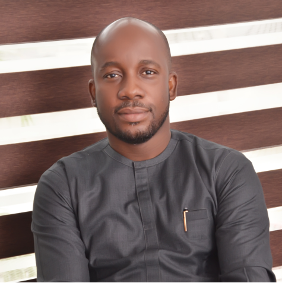
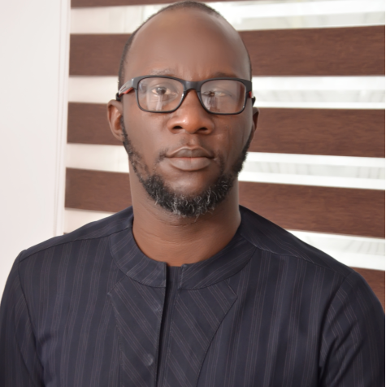
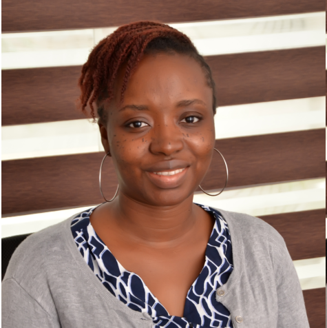
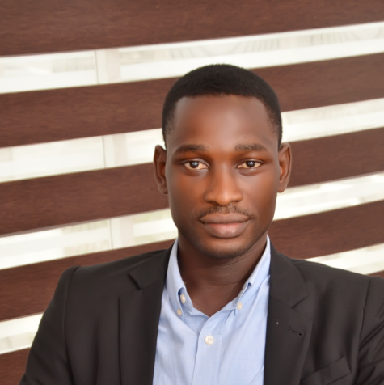
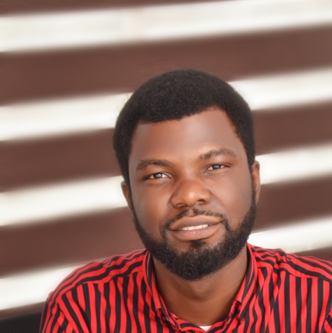
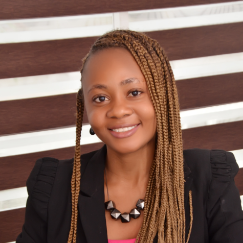

Abimbola Olundegun
CEO

Adebayo Durodola
MD
Teju Ogunronbi
ED

Seun Olugbodi
Credit Portfolio Management

David Seun Falade
Investment Analyst
Grace Iwuala
Fund, Sales & Investor Relations

Oladimeji Alagbada
Investment Analyst

Bashirah Quadri
Investment Team

CONTACT
Email: info@sthenicfinance.com
Location: 172B Corporation Drive (By Epe Lane), Dolphin Estate, Ikoyi 101233, Lagos, Nigeria